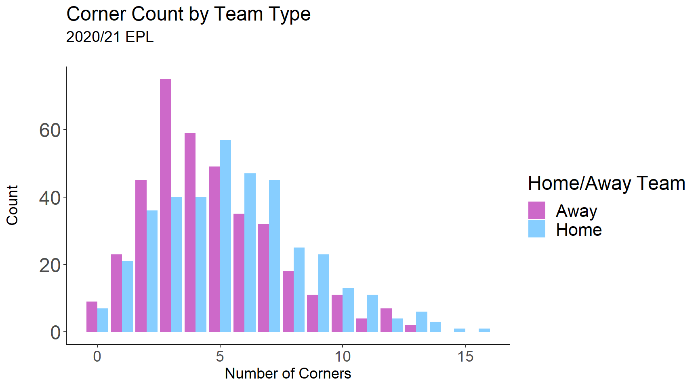
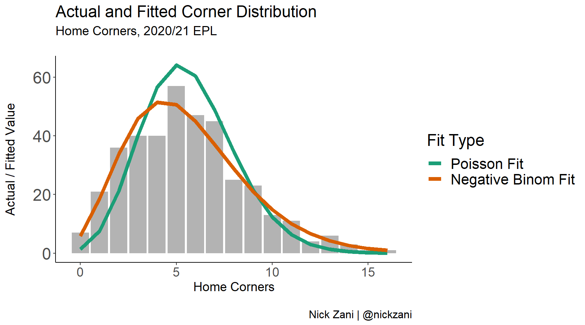

How can the number of home and away corners in the EPL be modelled, and can we build a prediction model?
I recently got a copy of Joseph Buchdahl’s latest book: Monte Carlo Or Bust: Simple Simulations for Aspiring Sports Bettors. It has a great primer on probability theory, and combines this well with sports data. I decided to put it to the by test modelling the number of corners in EPL matches.
The first question is, why corners?
Joseph’s website, Football Data, contains a huge amount of historic football data, along with the odds. I started there and imported the data for the 2020/21 EPL season. I changed the format of this from wide to long, by creating two dataframes: one for home teams and one for away teams, and then stuck this together. Note for the home dataframe, corners conceded is given by the number of away corners (ac) and vice-versa.
library(tibble)
library(dplyr)
library(stringr)
library(readr)
library(tidyr)
library(janitor)
library(ggplot2)
epl_2020_21 <- readr::read_csv('https://www.football-data.co.uk/mmz4281/2021/E0.csv') %>%
clean_names() %>%
mutate(date = as.Date(date, format="%d/%m/%Y"),
start_hr = str_extract(time, "[0-9]{2}"))
home_data <- epl_2020_21 %>%
dplyr::select(date, home_team, ftr, fthg, hc, hs, hst, ac) %>%
mutate(team_type = "Home",
win_flag = case_when(ftr == "H" ~ 1, TRUE ~ 0),
draw_flag = case_when(ftr == "D" ~ 1, TRUE ~ 0)) %>%
rename(team = home_team,
full_time_goals = fthg,
corners = hc,
shots = hs,
shots_target = hst,
corners_conceded = ac)
away_data <- epl_2020_21 %>%
dplyr::select(date, away_team, ftr, ftag, ac, as, ast, hc) %>%
mutate(team_type = "Away",
win_flag = case_when(ftr == "A" ~ 1, TRUE ~ 0),
draw_flag = case_when(ftr == "D" ~ 1, TRUE ~ 0)) %>%
rename(team = away_team,
full_time_goals = ftag,
corners = ac,
shots = as,
shots_target = ast,
corners_conceded = hc)
long_data = bind_rows(home_data, away_data)
Let’s start by graphing the corner distribution for home and away teams. We can use our long dataframe for this and pass the team type (home or away) into the fill aesthetic. Note the option of preseve = "single" to stop bars taking up the entire x axis if the other is zero. We can see different distributions for home and away teams, with the mean number of corners higher for home teams.
long_data %>%
ggplot(aes(x = corners, group = team_type, fill = team_type)) +
geom_bar(position = position_dodge(preserve = "single")) +
scale_fill_manual(values = c("orchid3", "skyblue1")) +
theme_classic() +
labs(title = "Corner Count by Team Type",
subtitle = "2020/21 EPL\n",
fill = "Home/Away Team",
x = "Number of Corners",
y = "Count\n") +
theme(strip.text = element_text(size = 18),
axis.title = element_text(size = 14),
axis.text.x = element_text(size = 14),
axis.text.y = element_text(size = 18),
plot.title = element_text(size = 18),
plot.subtitle = element_text(size = 14),
plot.caption = element_text(size = 12),
legend.text = element_text(size = 16),
legend.title = element_text(size = 18)
)

This looks roughly like the a Poisson distribution. We know that for Poisson distributions the variance should be equal to the mean so let’s check that with some summary statistics:
long_data %>%
group_by(team_type) %>%
summarise(mean_corners = mean(corners),
var_corners = var(corners)) %>%
ungroup() %>%
mutate(mean_var_ratio = var_corners/mean_corners) %>%
mutate_if(is.numeric, round, 2)
# A tibble: 2 x 4
team_type mean_corners var_corners mean_var_ratio
<chr> <dbl> <dbl> <dbl>
1 Away 4.63 7.11 1.54
2 Home 5.56 9.24 1.66Not too bad, however the variance is 50 - 60% higher than the mean, giving us a ‘long tail’ on our distribution. This means our data might be better suited to a negative binomial distribution.
The goodfit function from the vcd package allows us to test how well our data fits both the Poisson and negative binomial distribution. From here on we will only consider home corners. We will create two dataframes with a fit for each, and then compare these to actual values.
library(vcd)
hc_poisson <- goodfit(home_data$corners, type = "poisson", method = "MinChisq")
hc_nbinomial <- goodfit(home_data$corners, type = "nbinomial", method = "MinChisq")
hc_poisson_df <- data.frame(corners = hc_poisson$count,
fitted = hc_poisson$fitted,
type = "Poisson Fit")
hc_nbinom_df <- data.frame(corners = hc_nbinomial$count,
fitted = hc_nbinomial$fitted,
type = "Negative Binom Fit")
hc_actual <- home_data %>%
group_by(corners) %>%
count() %>%
ungroup() %>%
mutate(type = "Actual")
fits_df <- bind_rows(hc_poisson_df, hc_nbinom_df)
For goodness of fit tests the null hypothesis that the data is consistent with a specified reference distribution. The summary of the fit gives us a p value which allows us to make a decision on this.
summary(hc_poisson)
Goodness-of-fit test for poisson distribution
X^2 df P(> X^2)
Pearson 114.132 15 2.584289e-17Here we reject the null hypothesis for the Poisson distribution as the P value is very small, and well below the 0.05 threshold often used.
summary(hc_nbinomial)
Goodness-of-fit test for nbinomial distribution
X^2 df P(> X^2)
Pearson 10.35587 14 0.7357304Here we cannot reject the null hypothesis for the negative binomial as the P value is >> 0.05, so we infer that the negative binomial is the correct choice for fitting our data. We can confirm this by plotting the fitted values compared to the observed ones:
ggplot() +
geom_col(data = hc_actual, aes(x = corners, y = n), fill = "grey70") +
geom_line(data = fits_df, aes(x = corners, y = fitted, colour = type), size = 2) +
scale_colour_brewer(type = "qual", palette = 2) +
theme_classic() +
labs(title = "Actual and Fitted Corner Distribution",
subtitle = "Home Corners, 2020/21 EPL\n",
colour = "Fit Type",
x = "Home Corners",
y = "Actual / Fitted Value\n",
caption = "\nNick Zani | @nickzani") +
theme(strip.text = element_text(size = 18),
axis.title = element_text(size = 14),
axis.text.x = element_text(size = 14),
axis.text.y = element_text(size = 18),
plot.title = element_text(size = 18),
plot.subtitle = element_text(size = 14),
plot.caption = element_text(size = 12),
legend.text = element_text(size = 16),
legend.title = element_text(size = 18)
)

Now we understand the distribution, we can take this a step further and see if we can build a predictive model for corners. The general theme of most betting tips seems to be ‘team x has had a lot of corners in their last y matches, which implies they are likely to have a high number in their next match.’ We are now in a position to test that theory.
To start with we will create a dataset for home corners, and include the last 3 matches the home team has played. We will then ‘lag’ the previous 3 matches to gives us features to use in the model. For example, how many corners has the home team taken in their previous three matches. Because there will be missing values for the first three games of the season we will omit these with the na.omit() function.
hc_model_data <- home_data %>%
arrange(team, date) %>%
group_by(team) %>%
mutate(lag_1_home_corner = lag(corners, n = 1),
lag_2_home_corner = lag(corners, n = 2),
lag_3_home_corner = lag(corners, n = 3),
total_hc_last_3 = lag_1_home_corner + lag_2_home_corner + lag_3_home_corner) %>%
ungroup() %>%
na.omit()
Now we have the data we can use the glm.nb from the MASS package to create a regression model. Note that loading the MASS package interferes with the dplyr selection function.
library(MASS)
library(broom)
options(scipen=999)
m1_nb <- glm.nb(corners ~ lag_1_home_corner + lag_2_home_corner + lag_3_home_corner,
data = hc_model_data)
broom::tidy(m1_nb) %>%
mutate_if(is.numeric, round, 3)
# A tibble: 4 x 5
term estimate std.error statistic p.value
<chr> <dbl> <dbl> <dbl> <dbl>
1 (Intercept) 1.48 0.093 16.0 0
2 lag_1_home_corner 0.009 0.01 0.882 0.378
3 lag_2_home_corner 0.022 0.01 2.23 0.026
4 lag_3_home_corner 0.014 0.01 1.40 0.16 Note the p values for each of the features we created - only one meets the threshold for significance, and that is the number of corners from two games ago. Also note the estimates are all very low.
Possibly we can add in additional features to improve the predictive power, for example, say a team was very attacking and unlucky in winning corners. This should show up in other variables, like shots. Let’s expand our model with more variables, including this time lagged home goals, home shots and also corners conceded.
hc_model_data2 <- home_data %>%
arrange(team, date) %>%
group_by(team) %>%
mutate(lag_1_home_corner = lag(corners, n = 1),
lag_2_home_corner = lag(corners, n = 2),
lag_3_home_corner = lag(corners, n = 3),
lag_1_home_shots = lag(shots, n = 1),
lag_2_home_shots = lag(shots, n = 2),
lag_3_home_shots = lag(shots, n = 3),
lag_1_home_goals = lag(full_time_goals, n = 1),
lag_2_home_goals = lag(full_time_goals, n = 2),
lag_3_home_goals = lag(full_time_goals, n = 3),
lag_1_corners_conceded = lag(corners_conceded, n = 1),
lag_2_corners_conceded = lag(corners_conceded, n = 2),
lag_3_corners_conceded = lag(corners_conceded, n = 3)) %>%
ungroup() %>%
na.omit()
m1_nb2 <- glm.nb(corners ~ lag_1_home_corner + lag_2_home_corner + lag_3_home_corner +
lag_1_home_shots + lag_2_home_shots + lag_3_home_shots +
lag_1_home_goals + lag_2_home_goals + lag_3_home_goals +
lag_1_corners_conceded + lag_2_corners_conceded + lag_3_corners_conceded,
data = hc_model_data2)
broom::tidy(m1_nb2) %>%
mutate_if(is.numeric, round, 3)
# A tibble: 13 x 5
term estimate std.error statistic p.value
<chr> <dbl> <dbl> <dbl> <dbl>
1 (Intercept) 1.56 0.187 8.35 0
2 lag_1_home_corner 0.007 0.013 0.547 0.585
3 lag_2_home_corner 0.015 0.013 1.17 0.241
4 lag_3_home_corner 0 0.012 -0.025 0.98
5 lag_1_home_shots 0 0.007 0.057 0.954
6 lag_2_home_shots 0.001 0.007 0.188 0.851
7 lag_3_home_shots 0.009 0.007 1.32 0.188
8 lag_1_home_goals -0.015 0.026 -0.561 0.575
9 lag_2_home_goals 0.038 0.024 1.56 0.118
10 lag_3_home_goals -0.003 0.024 -0.129 0.897
11 lag_1_corners_conceded 0.001 0.012 0.045 0.964
12 lag_2_corners_conceded -0.015 0.012 -1.24 0.216
13 lag_3_corners_conceded -0.013 0.013 -1.05 0.293Note the p values now - none are significant. This tells us that there is very little predictive power in previous home performances on predicting the number of future corners. Some of the variable estimates are also negative, for example the number of goals scored in the previous game. This can be interpreted as every additional goal in the previous game should reduce the number of corners we would expect in the next game by 0.015.
We’ve seen that corners can be modelled using a negative binomial distribution, and that it is very difficult to use simple past performance to predict the future numbers of corners. There are a number of possible reasons for this:
Either way, if you encounter a ‘tipster’ who posts ‘research’ like ‘team x have scored y corners in their last 3 matches’ then be very afraid. There could well be a non linear relationship that can be teased out with decision trees, however looking at past form is in no way going to give this.
Stay tuned for the next steps: